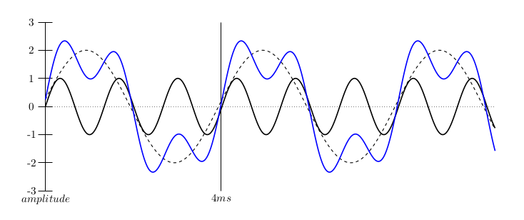

I needed to be able to generate a number of figures for a phonetics homework assignment showing an arbitrary number of component sine waves and the complex wave you get if you sum them.
TikZ and gnuplot to the very enjoyable and useful rescue! The only tricky part is that Tikz wants to call gnuplot to plot the functions. I don't let LaTeX execute arbitrary commands (for obvious reasons), but tikz generates intermediate <filename>.gnuplot files so I just had to add a line to execute these with gnuplot to the makefile for my homework assignment.
So far I've resisted the urge to turn this into a new command, but playing with these was so useful that I'm probably going to write a little web application before teaching phonetics again next year.
Example one: and the code to create it.
Example two: and the code to create it.
